Hello all Members and potential Members of the Woodstock Badminton Club! If you haven't already done so, please check out our weekly scheduled times and plan to come out and play a great game. It's fun for the whole family! All you need is a pair of indoor running or court shoes and we supply the rest. Memberships can be purchased anytime and are good for the day, or one full year from the date of purchase (best value). See you there!
November 2022
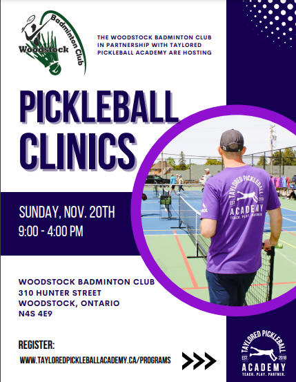
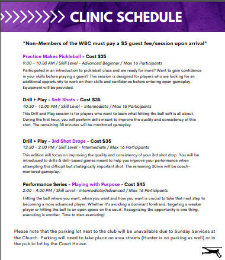
April 2022
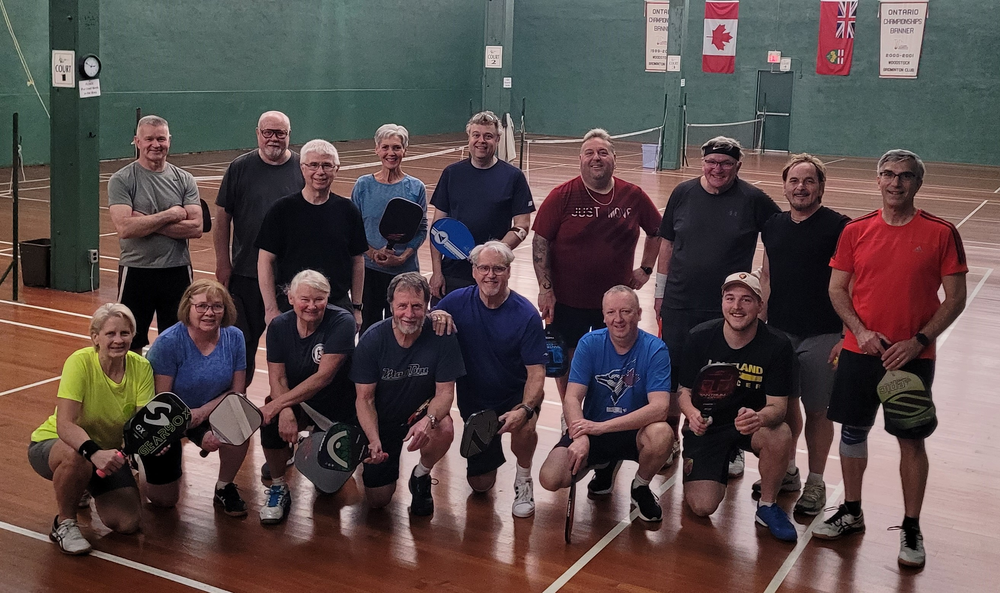
Winners:
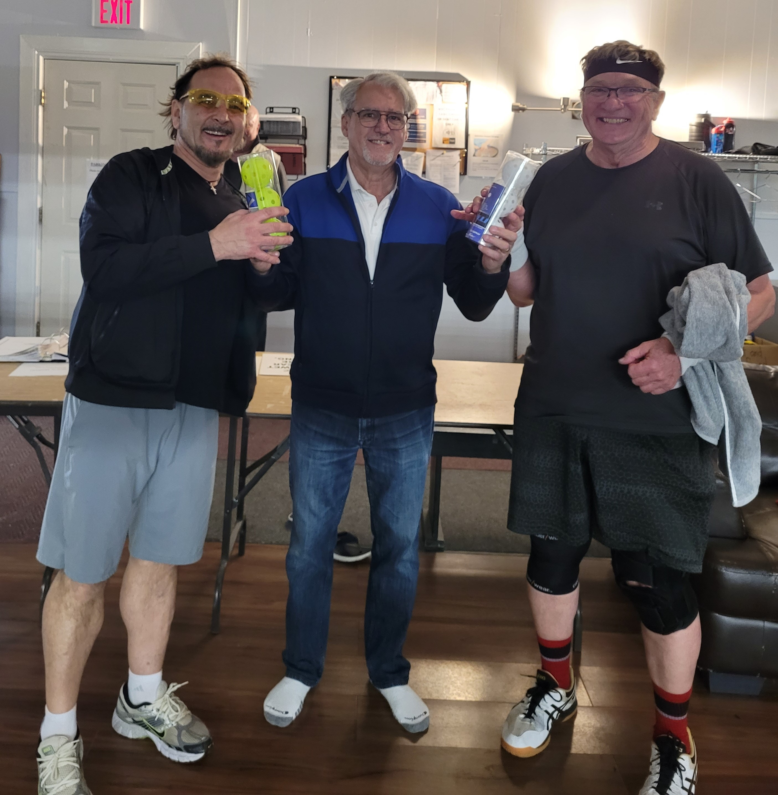
Cino Commisso and John Kupisz
Runner ups:
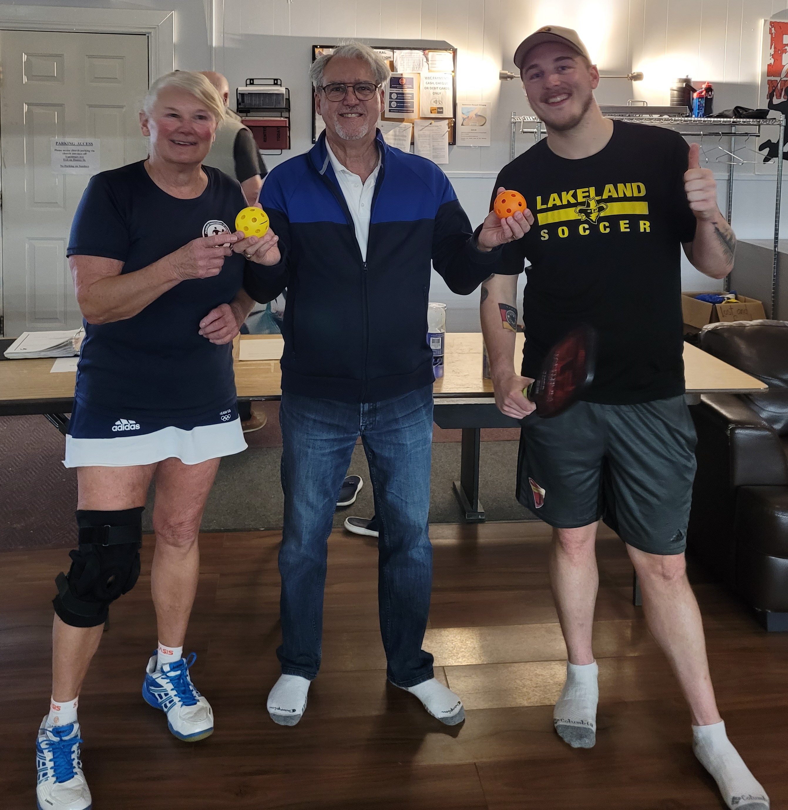
Nancy Alway and Josh Hatzenbuhler
Thank you to John MacDonald and company for organizing this event.
Fall 2020/Winter 2021
Rennovations on the outer outside wall as well as the downstairs locker room areas were completed. New drywall and a fresh coat of paint improved the lower level of the club.
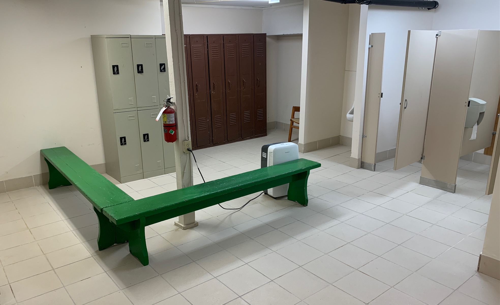
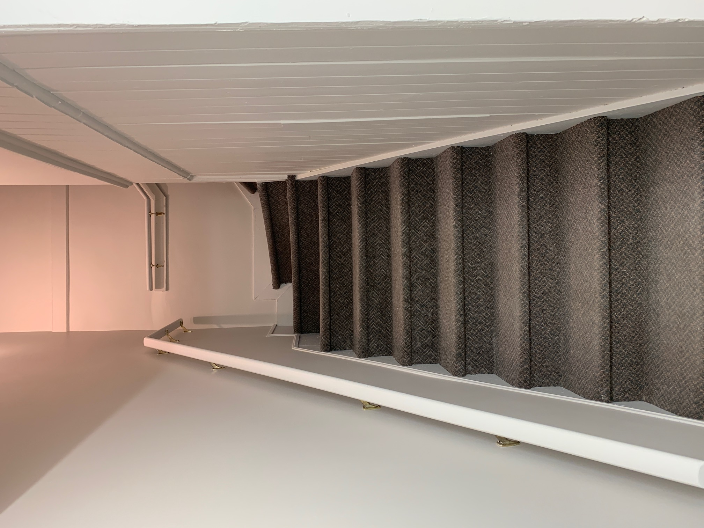
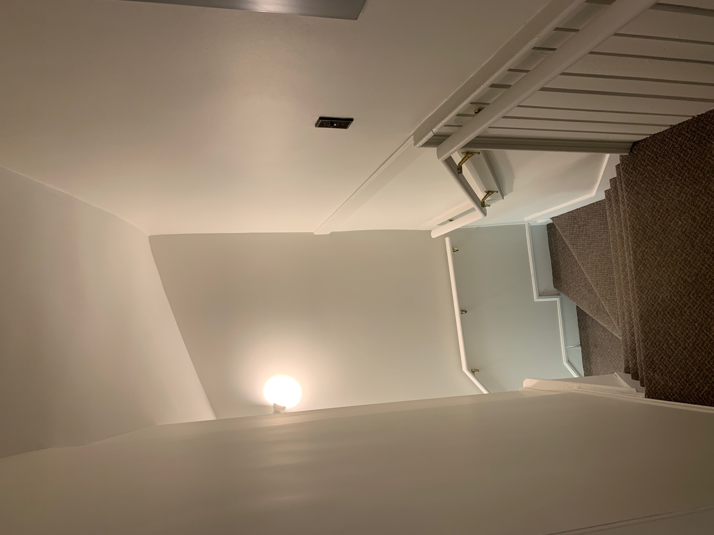
Saturday September 28, 2019

Sunday March 3, 2019
Woodstock Recreation Show at Cowan Park
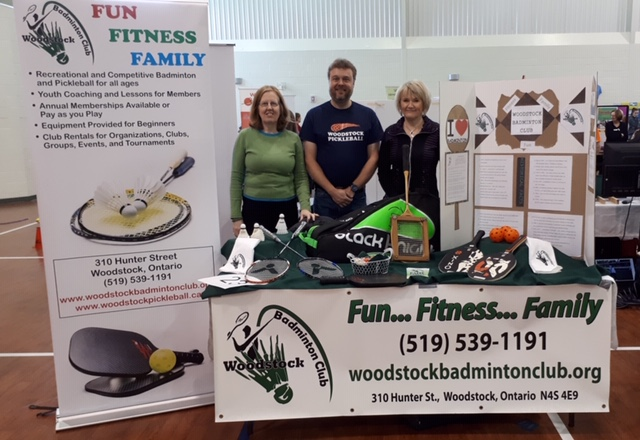
Sunday January 27, 2019
The Les is More Friendly Pickleball Tournament at the Woodstock Badminton Club was a success. Thanks John MacDonald for organizing this event! Everyone enjoyed pizza and we raised some of money that has purchased 15 pickleballs for court use!
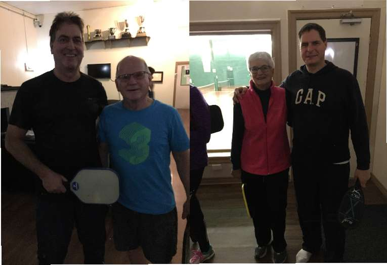
May 2016
The 3rd and final Pickleball and Pies tournament was held at the Woodstock Badminton Club in May 2016 and raised $4,050.00 in support of Ronald McDonald House Charities Toronto thanks to Marg Johnson, her team, and all the participants and their friends.This was a really fun team tournament organized by Marg, the grandmother of Aleeda who was born with Hypoplastic Left Heart Syndrome in 2012. She recovered from 3 surgeries and is now a healthy, happy, active 4- year- old who honoured the attendees with her presence, smile, and stickers which she stuck on just about everyone. Aleeda's mom,Tania, stayed at RMHC Toronto for a total of 527 days during the wait for Aleeda's heart transplant. The money raised will go directly to RMHC Toronto to help other families. The Shoe Fly Pie Team won over the Twinkle Pie, Grasshopper Pie, and Cheeseburger Picklepie, but overall, we all won because of the fun we had playing and meeting different players from the Windsor, Hamilton, London, Woodstock, Whitby, and Bowmanville areas; enjoying the abundance of snack foods, cold drinks, subs, and pies that were generously donated by Al and Alice Schut of The Pie Place,Embro; and participating in the raffle and Silent Auction while taking part in an excellently organized and fun, timed tournament. Please see the photos in the Gallery, especially the ones of Aleeda and her family.
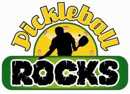